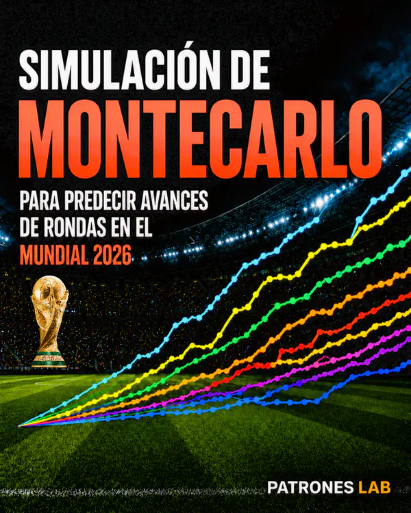

1
 Power BI
Power BI Qlik Cloud
Qlik Cloud Looker Studio
Looker Studio SQL Server
SQL Server
الاستكشاف
السياق والهدففهم المشكلة والقرار المطلوب تحسينه والمستخدمين المعنيين والنتيجة المنتظرة.
تحليل البيانات
Patrones Lab مختبر لتحليل البيانات ودراسة ظواهر من الحياة اليومية.
يعرض مشاريع مستقلة تستند إلى بيانات عامة، وتركّز على اكتشاف الأنماط ووصف السلوكيات وعرض النتائج في سياقها.
الهدف هو طرح أسئلة وإعداد البيانات وإجراء تحليلات واضحة وعرض النتائج بصريًا.

أنا Malcolm Di Pietro Cagliari، خبير اكتواري ومتخصص في البيانات وتحليلها. أجمع في عملي بين ذكاء الأعمال وإعداد تقارير الشركات ونمذجة البيانات والتحليلات التنبؤية، ولدي خبرة في قطاعات منها المصارف والتأمين والنقل الجوي.
أتخصص في ربط احتياجات الأعمال بحلول قائمة على البيانات. أحدد مؤشرات الأداء الرئيسية، وأنظّم المعلومات، وأبني لوحات معلومات وأطوّر نماذج تساعد على فهم ما يحدث واتخاذ القرارات في ضوء سياقها.
فهم المشكلة والقرار المطلوب تحسينه والمستخدمين المعنيين والنتيجة المنتظرة.
تحديد مصادر البيانات المتاحة وأصلها وتواتر تحديثها وموثوقيتها وأهم قيودها.
تنظيم البيانات وتنظيفها ودمجها لبناء قاعدة متسقة يمكن استخدامها.
إعداد التحليل أو النموذج أو لوحة المعلومات المناسبة للهدف المحدد.

Plotlyالتحقق من اتساق النتائج واستقرارها ومدى توافقها مع واقع العمل.
توثيق العمل النهائي وأتمتة المهام المتكررة والاستفادة من الملاحظات في تحسينه لاحقًا.
مشاريع تطبيقية تستخدم بيانات عامة وتعرض المنهجية والنتائج بصريًا. استخدم خيارات التصفية للتصفح حسب المجال أو الأداة أو نوع المخرجات.

تحليل الحركة الجوية في إسبانيا ببيانات AENA العامة، مع التركيز على حجم الحركة وأنماطها في كل مطار والفروق بين الفئات.

تحليل استكشافي لمساكن Airbnb في لندن يقارن الأسعار وأنواع السكن والتوافر والحد الأدنى للإقامة والفروق بين الأحياء.

تحليل رحلات سيارات الأجرة في شيكاغو لدراسة المدة والطلب والتوزيع الجغرافي وأنماط التشغيل.

نموذج تصنيف بالانحدار اللوجستي يحدد الإعلانات المرتفعة أو المنخفضة السعر نسبيًا ضمن كل نوع من المساكن.

لوحة تفاعلية في Looker Studio لاستكشاف رحلات سيارات الأجرة في شيكاغو ومؤشرات التشغيل والأنماط حسب الوقت ومسارات الرحلات من نقطة الانطلاق إلى الوجهة.

نموذج انحدار لوجستي يقدّر احتمال التسجيل من كل تسديدة ببيانات StatsBomb العامة. جرى التحقق منه على مستوى المباريات وتطبيقه على كأس العالم 2022 في قطر.
فتح المشروع
نموذج احتمالي للخطورة المتوقعة في كرة القدم يستخدم بيانات StatsBomb العامة لتقدير احتمال تسجيل هدف خلال التحركات الخمس التالية.

✅ منشور
تجميع غير خاضع للإشراف باستخدام K-means للكشف عن الاحتيال ببطاقات الائتمان.

✅ منشور
تصنيف خاضع للإشراف باستخدام الانحدار اللوجستي للكشف عن الاحتيال ببطاقات الائتمان.

✅ منشور
تجميع غير خاضع للإشراف باستخدام DBSCAN لتحديد حالات الاحتيال المحتملة ببطاقات الائتمان.
فتح المشروع
تحليل إحصاءات كأس العالم 2022 ببيانات StatsBomb العامة لتلخيص أداء كل لاعب والمقارنة بين اللاعبين باستخدام مخططات الرتب المئينية.

تحليل مكاني لرحلات سيارات الأجرة في شيكاغو لتحديد أكثر المناطق نشاطًا ومسارات التنقل داخل المدينة ومناطق تركز الطلب.

لوحة Power BI تفاعلية تحلل عدد مرات الاستماع وترتيب الأغاني وتغيره بمرور الوقت والتوزيع الجغرافي للموسيقى في Spotify Charts.

✅ منشور
تقرير تفاعلي في Power BI لتحليل الإنفاق على الموردين وتطوره الشهري وتوزيعه حسب الفئة والمنطقة الجغرافية، إلى جانب الوفورات المحققة.

محاكاة مليون سيناريو لكأس العالم 2026 باستخدام تصنيفات إيلو لتقدير فرص بلوغ نصف النهائي وخوض النهائي والفوز بالكأس.

نموذج تصنيف يقدّر الخسائر الاقتصادية الناتجة عن الظواهر الجوية ويقارن الانحدار اللوجستي بشبكة عصبية.

تحليل مكاني لأسعار Airbnb في لندن يستند إلى المسافة من مركز المدينة والأحياء ومؤشرات المساكن المجاورة.

محاكاة مليون سيناريو للدوري الإسباني 2026/27 باستخدام تصنيفات إيلو لتقدير احتمالات أبرز نتائج الموسم.

يقدّر نموذج أهداف قائم على توزيع بواسون القوة الهجومية والدفاعية لكل فريق، ثم تُستخدم محاكاة مونت كارلو لتقدير احتمالات نتائج البطولة.

محاكاة مليون سيناريو لدوري الأمم الأوروبية 2026/27 باستخدام تصنيفات إيلو ونموذج أهداف قائم على توزيع بواسون لتقدير فرص تصدّر المجموعة والتقدم في الأدوار الإقصائية والفوز باللقب.

نموذج ثنائي الحدين يحلل احتمالات عدد الأهداف ونتائج المباريات من تسديدات 36 ناديًا في دوري أبطال أوروبا 2026/27 ومعدلات تحويلها إلى أهداف.
للتواصل بشأن فرص العمل أو التعاون في تحليل البيانات أو مشاريع ذكاء الأعمال والتعلم الآلي ولوحات المعلومات.
البريد الإلكتروني: malcolm@patroneslab.com
راسلني وسأرد عليك في أقرب وقت.